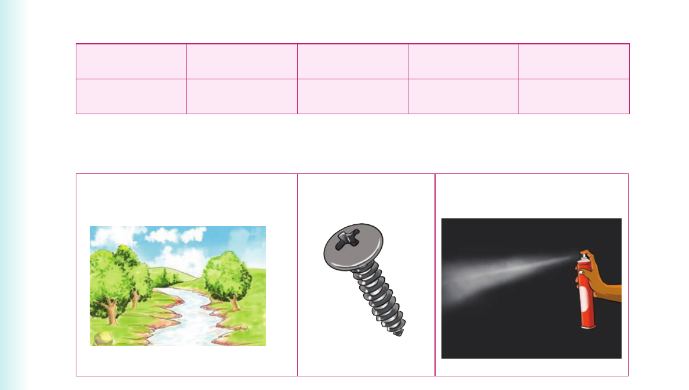

Unit Three: Letter-sound relationships
I read words with groups of consonants
I read words with groups of consonants.
Activity 1
1. Read aloud or sign the following words. street straight screw stripe strong stream spray spread sprout 2. Use the words in (1) to name the following pictures: (a) (b) (c)
1. Read aloud or sign the following words.
| street | straight | screw | stripe | strong |
| stream | spray | spread | sprout |
2. Use the words in (1) to name the following pictures:

3. Pronounce the sound groups str-, scr- and spr-. Or finger spell the letter groups str-, scr- and spr-. 4. Read aloud or sign the following sentences: (a) We live on the next street. (b) A zebra has stripes on its body.
(c) Healthy stew will make you strong.
(d) Draw straight lines with your ruler.
(e) We crossed the stream on our way home.